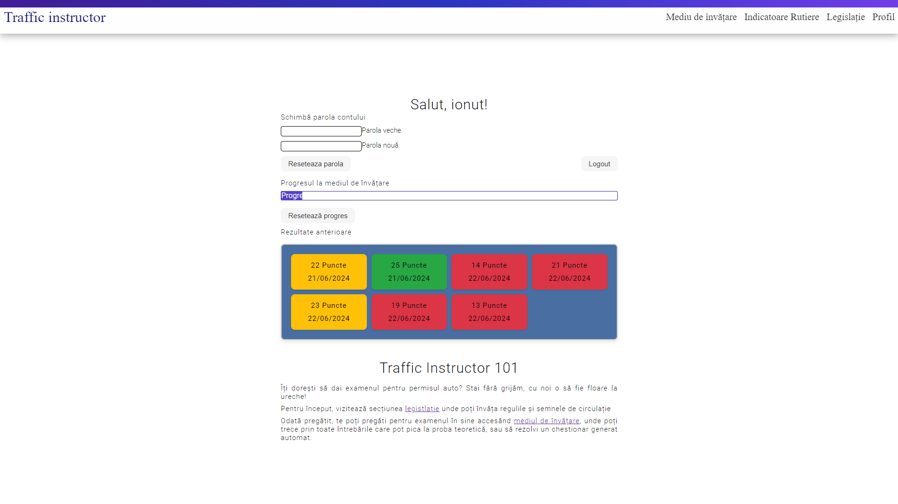

Documentație RoT
Authors
- Jiglău Gabriel
- Călin Ionuț
Affiliations
- Facultatea de Informatică, UAIC
List with content of the documentation
1.Introduction
1.1.Purpose
RoT is a web application and API that allows its visitors to prepare for the auto exam. It provides a learning environment where users can learn about traffic signs and the legistlation, but also test their knowledge through a gamified approach, consisting of solving quizzes and questions.
1.2.Intended Audience
The intended audience for this application is represented by people who want to learn about traffic signs and the legislation in order to pass the auto exam. The application is designed to be user-friendly and accessible to all users, regardless of their level of experience with technology.
1.3.Product Scope
The product in question is an online platform that provides users with the necessary tools to learn about traffic signs and the legislation. The platform includes features like a page where you can study signs and legistlation, a section where you can either practice questions or take an auto-generated quiz, progress tracker and a page where you can manage your user profile.
The website will also have a public API with an OpenAPI specification that can be used by other applications to communicate and get data from the application, data which is exported as JSON files. Admins can also import questions through JSON and export data about the users as a CSV.
1.3.References
2.Overall Description
2.1.Product Perspective
RoT is a platform that facilitates the learning process for the permit exam, regardless of the level of experience the user has.
2.2.Product Functions
Functionalities of the site:
- Being able to create and log into an account on the platform;
- Study the laws and signs on a organized page;
- Search for a certain question
- Provide all the questions that can appear on the permit exam;
- Auto-generate quizzes;
- Track your progress;
- Leaderboard with the most hardworking users
- The site with a REST API can provide questions, laws or signs to external parties;
- Being able to export data in CSV and/or JSON formats;
- Having the possibility to manage questions and info about users inside the web application as an administrator;
- Export the leaderboard as a RSS feed;
2.3.User Classes and Characteristics
There are 3 possible types of users which can use the website:
-
Guests
- they want to study for the exam only;
- they want to catch up with today's legistlation;
- they practice for the permit exam by solving questions or quizzez;
- read the leaderboard as a RSS feed;
- Authenticated users
- same scopes as the guests, plus a few extra;
- track their progress on the platform;
- compete with other users on the leaderboard;
- Administrators
- they can modify and update the data shown on the site;
- create questions;
- delete questions;
- export the users and their scores as a CSV file;
2.4.Operating Environment
The programming languages used for the front-end are HTML, CSS (with SCSS pre-processor) and JavaScript to communicate with the backend. The backend is written in Node.js, with the database solution provided by MongoDB
2.5.Design and Implementation Constraints
To access the site, you just need a compatible browser on any platform
To open the CSV/JSON files, you need an open source text editor for JSON, or a service such as Google Sheets or Microsoft Excel for the CSV.
3.External Interface Requirements
3.1.User Interfaces
All pages have in common the navbar that includes the title of the platform and buttons that redirect you to its main categories
When you first enter the site, you are redirected to the start page. It contains the title of the application, and details and information about the platform and its main objectives.
The "Login" page allows user to either connect to the platform using e-mail and password, or to make an account on the "Register" form. To make an account they must complete the e-mail, username and password fields. If they are filled correctly, the account will be made and the user will be redirected to the "Login" page to authenticate.
After logged in, the "Login" button in the navbar will be replaced by a "Profile" button which redirects to the user profile, where the user can change their password, reset their progress or find help about how to use the app.
The "Legislation" page is separated into chapters, which each chapter pertaining to a certain subject. By clicking on a chapter, the user is redirected to the main articles in the law regarding that chapter.
The "Traffic Signs" page is also separated into categories, which each category presenting its corresponding signs, with the image, title and description of the sign.
On the "Practice" page, the user is presented with two buttons which redirect them to a page where they can exercise questions, or do a quiz. They can also search for a certain question. This page also shows a leaderboard of the most hardworking users.
The "Exercise questions" page provides the user with a randomly chosen question from all the possible questions that they haven't solved yes. The user can choose either one or more responses to verify, or skip the question altogether. At the top, there is a progress bar where they can keep tab of the progress.
The "Quiz" page will have a similar interface to the "Exercise questions" page, except instead of a progress bar it will have a timer and show how many questions are remaining. At the end it shows you your final score and if you have passed or failed.
3.2.Hardware Interfaces
The platform can be accessed regardless of the platform (PC, Laptop, Phone, iPhone), with the communication protocol being HTTP.
3.3.Software Interfaces
The software interfaces in the project are:
- Our app API, which facilitates the communication between the front and back end. It also features a public API, with the Swagger page available at /docs.
- The database, which is provided by MongoDB, and is accessed through the Mongoose library. It contains all the info about the users, questions, laws and signs. Mongoose facilitates the communication between the app and the database, allowing for CRUD operations.
- For routing, we use nginx, which is a web server that also acts as a reverse proxy.
Diagrams
C1: Context diagram
C2: Container diagram
C3: Component diagram
C4: Code diagram
3.4.Communication Interfaces
The HTTP protocol is used for data transfer.
4.System Features
4.1.Account Creation
4.1.1.Description and Priority
The user can choose to create an account on the platform, so that he can track his progress and compete with other users on the leaderboard. The priority of this feature is high, as it is essential for the users to keep track of their progress.
4.1.2.Stimulus/Response Sequences
When the user clicks on the "Register" button, a form will appear where he can fill in his e-mail, username and password. All these fields are required, with certain restrictions on the password. If the fields are filled correctly, the account will be created and the user will be redirected to the "Login" page. There he can log in on the application, choosing to be remembered at the next session. After logging in, the "Login" button will be replaced by a "Profile" button, where the user can change his password, reset his progress or find help about how to use the app.
4.1.3.Functional Requirements
- The system must allow users to create and login into their accounts;
- Usernames must be at least 3 characters long and can only include alphanumeric characters and the symbols . _
- For security reasons, passwords are hashed on the frontend before being sent to the backend
- On login, if credentials are ok, the user receives in the response a JWT that they provide on further requests; this JWT is stored in the localStorage
4.2.Profile Management
4.2.1.Description and Priority
On the profile page, the user can change their password, see and reset the progress, and find help about how to use the app. The priority of this feature is high, as it is essential for the users to keep track of their progress.
4.2.2.Stimulus/Response Sequences
When the user clicks on the "Profile" button, he is redirected to the profile page. Here, he can change his password by filling in the old password and the new password. If they don't match, an error message is shown. The user can also reset his progress, which will delete all the progress he has made so far. The progress is shown as a bar for the amount of questions answered, and as a grid that contains the scores and dates of the quizzes.
4.2.3.Functional Requirements
- Old and new password are hashed for security reasons, if they dont match the server responds with a corresponding error;
- When the user resets the progress, the server deletes all the progress he has made so far;
- The profile page is shown only to authenticated users, trying to access it without being logged in will redirect them to the login page;
- The progress bar must reflect the user progress;
4.3.Studying
4.3.1.Description and Priority
The user can study the laws and signs on the platform. The priority of this feature is high, as it is essential for the users to learn the necessary information for the permit exam.
4.3.2.Stimulus/Response Sequences
When on the page "Legislation" or "Traffic Signs", the user can click on a chapter or category to see the articles or signs.
4.3.3.Functional Requirements
- The platform provides categorized sections for laws (legislation) and traffic signs (traffic signs).
- Each section (legislation and traffic signs) allows the user to navigate through chapters or categories based on their individual preferences.
- After selecting a chapter or category, the platform will dynamically (through AJAX) display relevant articles or signs.
- Users are able then to view detailed information about each law article or traffic sign, including textual descriptions, visual representations and some recommendations about them.
- For each law article, users have access to explanations and interpretations that aid in understanding the theoretical concepts.
- The application includes interactive elements such as quizzes or questionnaires, used as an alternative to studying and practicing their knowledge regarding laws and signs.
- Users have the ability to track their progress in studying laws and signs, including completed questionnaires, along their past scores.
4.4.Quiz Solving (gamification aspect)
4.4.1.Description and Priority
The user can practice for the permit exam by solving questions or quizzes. The priority of this feature is high, because it is important to test your knowledge before taking the exam.
4.4.2.Stimulus/Response Sequences
When on the "Practice" page, the user is presented with a leaderboard of the most hardworking students, that is also available as an RSS feed, a search bar and two buttons. The search bar allows users to search for a specific question based on certain keywords. The first button leads to the "Exercise questions" page.
The 2nd button leads to the "Quiz" page. Both pages have a common component, that is the question with three answers, of which the user can select either one or more. On the "Exercise" page, there is a progress bar to keep track of how much they have solved. On the "Quiz" page, instead of the progress bar, there is a timer and a counter for how much they have solved. At the end of the quiz, the user is shown his final score and if he passed or faild.
4.4.3.Functional Requirements
- The page provides an order list with the top 5 most hardworking students (available as an RSS feed too);
- The user can search for a specific question based on certain keywords, after which he is redirected on a separate page;
- The user can practice for the permit exam by solving questions or quizzes;
- For the "Practice" aspect, the user receives only questions they have not solved yet;
- The progress bar must reflect the user progress;
- For the "Quiz" aspect, the user receives a random set of questions, with a timer and a counter for how much they have solved;
- Each question has three answers, the user must select at least one before sending the response;
- If the user does not know the response, they can skip to the next question using the arrow buttons;
4.5.Admin Dashboard
4.5.1.Description and Priority
Admins of the application have a central page where they can add or remove questions from the database, and export data about the users as a CSV file. The priority of this feature is high, as it is essential for the admins to be able to manage the data shown on the site.
4.5.2.Stimulus/Response Sequences
The admin can access the dashboard by going to the /admin page. Here, they are presented with two forms, one for adding questions and one for deleting questions. First form requires the admin to fill in the question, the answers and check the correct ones. The second form has a field for the id of the question to be deleted. The admin can also export the users and their scores as a CSV file.
4.4.3.Functional Requirements
- The admin dashboard includes a secure login mechanism for accessing administrative functionalities.
- After a successful login, the admin has the tools to add new questions, or delete existing ones from the database.
- The "Add Question" form includes fields for question text, answer choices, and checkboxes for marking correct answers.
- The admin also has the ability to delete questions from the database by entering the ID of the question to be deleted.
- Present is a tool to export user data (including usernames and scores) in CSV format for external analysis or record keeping.
- Any action performed by the admin (addition or deletion of questions) is also updated in the database.
- The admin dashboard successfully implements appropriate error handling and validation to prevent unauthorized actions and data inconsistencies.
- This page is available to authorized personnel only, in order to restrict access to 'outsiders' from taking administrative actions.
4.6. Data Exporting and RSS Feed
4.6.1. Description and Priority
The "Data Exporting and RSS Feed" feature provides essential functionalities for accessing and utilizing platform data in various formats. After searching for a question, there exists the functionality of exporting question data in JSON format. Additionally, the a RSS feed based on top user scores, alongside their names is also present, enhancing user engagement and competition awareness.
This feature is crucial for enhancing user learning experiences as it facilitates offline access by giving the possibilty of downloading the study materials and providing real-time updates on user performance.
4.6.2. Stimulus/Response Sequences
JSON Export: Users initiate the process by entering keywords to search for specific questions. After selecting a question that matches the input keyword, they can view its id, the correct answers and the image/full text associated with it.
RSS Feed: The RSS feed updates in real-time, providing users with current top 5 user, based off their scores(used formula: score = averageOfTheAnsweredQuestions * 99 + questionsAnswered/totalQuestions ). The feed is constructed from an rss template, without any help from an external library. It includes essential details about user performance, allowing them to easily track their progress relative to others.
4.6.3. Functional Requirements
- The application provides a search functionality for users to find questions, based off keywords.
- After selecting one of the matched questions, users are able to view detailed information including its id, the correct answers and the image/text associated with it.
- Users can choose to download questions in JSON format for offline access or integration with external tools.
- The RSS feed shall update dynamically to reflect current top user scores, enhancing user engagement and competition awareness.
- Each item in the RSS feed contains relevant user score details for clarity and usability.
- Both JSON export and RSS feed functionalities are based on open standars, and as such, easily support integration with external platforms or tools.